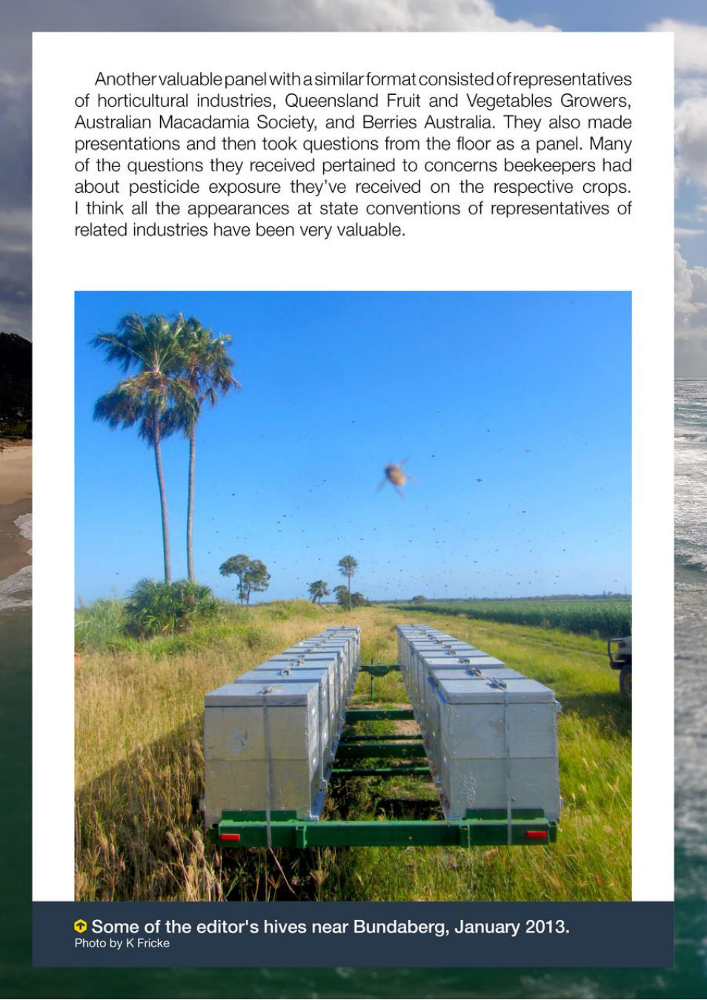

Another valuable panel with asimilar format consisted ofrepresentatives
of horticultural industries, Queensland Fruit and Vegetables Growers,
Australian Macadamia Society, and Berries Australia. They also made
presentations and then took questions from the floor as a panel. Many
of the questions they received pertained to concerns beekeepers had
about pesticide exposure they’ve received on the respective crops.
I think all the appearances at state conventions of representatives of
related industries have been very valuable.
ere 2
hi a oe
S Some of the editor's hives near Bundaberg, January 2013.
Photo by K Fricke